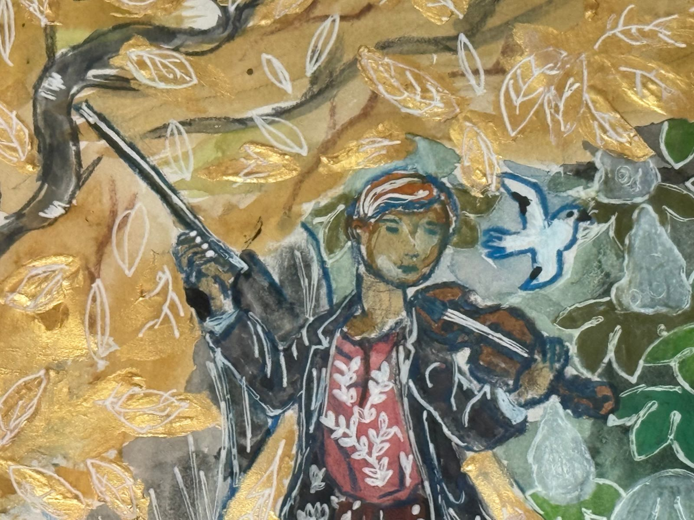
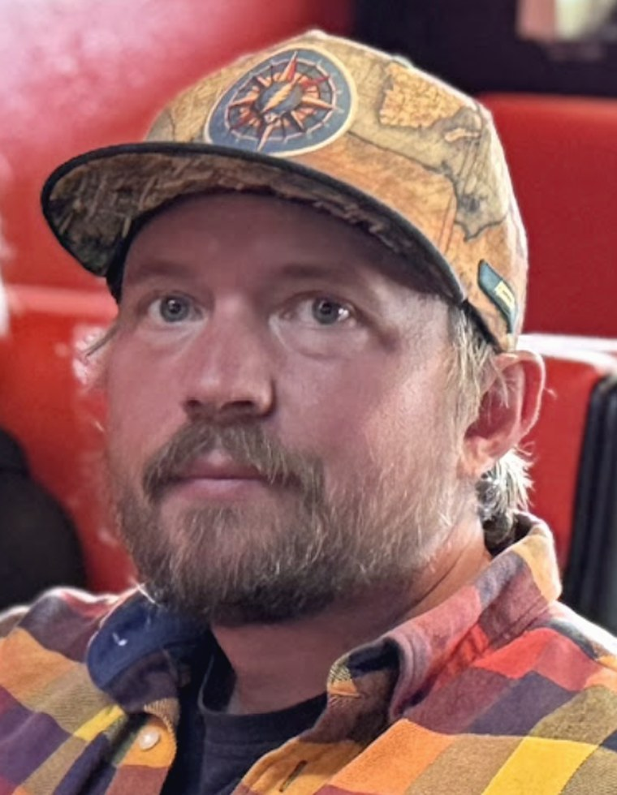

Alexander Sabine · educator, simulation designer
Being and Becoming
Hard ideas, made to be handled. Twenty years with children and students; now frontier science. Pedagogy is the thing that matters most to me.

I
Render and Process
Eternity is in love with the productions of time.William Blake
A score is not the music. A lump of clay is not the pot. A thing is what it is, and it is also what it is doing.
Transcript
This is a potter's wheel. On it, a lump of wet clay. For the next ten minutes, let it stand for something else. The clay is another person. A child, a learner, someone you love. The hand that touches it is the world outside them. A parent. A teacher. Whoever they lean on. And the turning of the wheel is time. One thing, before we begin. Clay is passive. A child never is. Winnicott, Malaguzzi and Freire each began from the same place. The child arrives active, capable, and full of meaning of their own. Never a vessel to be filled. So this is not a film about shaping a person. It is about how to use your weight, beside one.
The wheel begins to turn. Watch the clay. It is off centre, and the faster it goes, the further it throws itself out. Nothing is wrong with it. This is simply what a new thing does, when it is given time, and nothing to steady itself against.
So the potter brings a hand to the clay, and does the hardest thing. She keeps still. She is not pushing the clay to the centre. Watch slowly. Once in every turn, the high side comes round, meets her hand, and gives way a little. Then again. And again. The clay is centring itself, against something that does not move. Donald Winnicott called this holding. A steady presence, that adds nothing of its own. And when it is done, she does not pull away. She eases off, a little at a time. Let go all at once, and the clay lurches.
Now look from above, and let the wheel run fast. Everything here is moving. The clay has a body, and because it has a body in motion, it lives in time. Watch the edge blur. Every part of it is going somewhere. Except one. At the very centre, there is a point that does not turn at all. It has no size, and there is nothing in it. And yet everything else is arranged around it. Potters speak of this. Mary Caroline Richards built a whole philosophy on it, and called it centring. You have a place like this. Thoughts turn. Moods turn. Years turn. Something has been still the whole time. Ask yourself, gently. Where, and when, have you always been?
Let us go closer. Halfway to the centre, the clay moves at half the speed. Halfway again. And again. Each time, a smaller wheel, turning at the same rate. The still point is really there. But it has no size, so we can only ever draw nearer. Zeno would have smiled. Always halfway. Perhaps this is what Now is. An empty place, between the settled past and the open future. And notice where we are looking from. One height. One side. Donna Haraway called it the partial view. Nobody sees from nowhere. The centre is the same for everyone. The view of it never is.
The potter presses down through the middle, and now there is an inside. This is the moment a lump becomes a vessel. Notice what makes it useful. Not the clay alone. Not the emptiness alone. The two together. Painters call it figure and ground. Each gives the other its shape. A self needs room inside. And it needs a floor. Go too deep, and there is nothing left to stand on.
Now the wall. Pressure from outside, support from inside, and between them, the clay begins to rise. Without any pressure from outside, nothing rises at all. Constraint is not the enemy of becoming. It is what makes becoming possible. Now watch the balance, on the right. It weighs the potter's hand against the clay's own firmness. A thick wall barely notices her. A thin, wet wall takes almost everything she gives. The more open someone is, the more your weight counts. A single word can be a spell. What costs you nothing to say, can cost them everything to hear. This is why teaching is a kind of sacred trust. And so is therapy. And so is any ordinary day spent holding someone.
Then, a wobble. The rim has started to wander. This is the moment the clay needs more of her, not less. So she gives it. Both hands, perfectly still, for as long as it takes. See the balance tip towards her. And as the wobble settles, she gives the weight back. That is the whole art of support. Add your weight when it is needed. Take it away when it is not. Never keep it because it feels good to be needed.
Here is something the potter did not expect. She had a picture of this pot. The dotted line. A tall jar. But when she presses that way, the clay resists. And when she presses the other way, it gives. So she changes her picture. Not the clay. Watch the dotted line move. She is learning what this pot is, from the pot. Good teaching runs in both directions. It is translation, both ways, because neither can ever see inside the other. The one with more weight has more to offer, and just as much to learn.
Here is the same clay, with a different potter. This one has a drawing, and does not change it. The clay goes along. It has no choice. From the potter's seat, nothing looks wrong. The outline matches the drawing. Even the balance looks fair. But the strain is in the wall. And in the kiln, the fire finds it. What is forced can hold for a long time, and show up later.
And here it is, with a potter who starts the wheel, and leaves. No pressure. No drawing. It may look like freedom. People sometimes read Rousseau this way. Leave the child to nature. He never said that. In Emile, the tutor is always there, arranging the world with great care. Blake went further. Rousseau, he wrote, thought us good by nature. Blake thought a person has to be made new, again and again, by what stands against them. Without contraries, is no progression. Nothing holds the clay, so nothing centres it. And the turning of the world does the rest. Too little weight is also a way of failing someone.
Between too heavy and too light, there is a middle way. It has an old name. Equanimity. Evenness of mind. Here, it means something particular. Carrying everything you have lived, all your skill, all your history, at exactly the weight it has earned. Heavy enough to be someone the other can lean on. Light enough that they can come through as themselves. Winnicott's phrase for it was good enough. Not perfect. Good enough. It is the same in a classroom, in a consulting room, at a bedside, at a kitchen table. The potter knows a great deal about pots. She holds all of it lightly, so that this one can tell her what it is.
The wheel slows. Her hands are already gone. Then a wire, under the foot, and the pot is free. It stands a little off the centre of the wheel, and that no longer matters. It has its own centre now.
Into the fire. Until now, everything could be changed. After this, it cannot. The moment settles, and becomes the past. Then the glaze. The face the world will see. This one is clear, so every line the potter's hand left is still there, shining through. We carry our history at our surface.
A bowl. Nobody could have said so at the start. Not even the potter. So, was it made? Or was it found? Winnicott's answer was: never ask. Between the hand and the clay, there is a space that belongs to neither. He called it potential space. It is where a child plays. And it is where anything new begins. But remember what the clay could not do. It could not refuse. It could not imagine. It could not play. A child can. Loris Malaguzzi said that a child has a hundred languages, and that we steal ninety-nine. So this is the real work. Not the pot. Keeping that space open. Hold still. Press lightly. Go at their pace. And let all hundred come through. The wheel has stopped. The centre never moved.
A film in clay · 10 minutes
At the Potter’s Wheel
How much of your own weight to use beside another person. When to hold still. When to let go.
A talk
Winnicott’s Potential Space
On play, the perfect mirror, and the space between two people where things are both made and found.

Transcript
Hello, and welcome. I am a synthetic voice, made out of other people's voices, which makes me a model. So I feel quite at home in a museum about models. It has no building, and you can walk round it from your sofa. This is Blake's Newton, so pleased with his diagram that he has not noticed the rock he is sitting on. Blake only asks him to look up now and then.
Hold a model too tightly and it goes transparent: you stop seeing it, and start seeing with it. Blake called that single vision. There are a great many models in the world just now. That is why the free energy principle is such a gift. It is a map of map-making, so it helps us to understand one another's models, and our own.
Take two circles, each a map made from where somebody started. Lay one on top of the other, and there is no surprise, and nothing to learn. Pull them apart, and nothing meets. Bring them together at the edges, and that is where the learning happens. And nobody models alone. Where autopoiesis says a living thing makes itself, Donna Haraway offers sympoiesis:
making-with. Even your Markov blanket was knitted by the neighbours. That is why no single group can hold the whole map, as this room well knows. It is also why you cannot measure drift from inside the drift. For that you need a friend outside, or a diary. So the process matters. Winnicott would draw a squiggle and ask a child to turn it into something.
Was the result made, or found? He said never to ask. It is both: created, and discovered. The process leaves a trace, too. Nobody planned these paths. People simply walked them. So picture not one museum, but a whole compost heap of them, joined by tunnels. Here is the proof of concept: a second museum, about how chemistry became life.
Your guide is a small cell called LUCA, the ancestor we all share. Here are four billion years, painted round a single room. A slime mould finds its way between its meals. A fungus feels its way through the soil. And one small spot becomes a great many. Nobody finished any of it. It was all process. There is play here as well.
A ship is rebuilt plank by plank, until we wonder whether it is the same ship. Fifteen pendulums drift in and out of step. And a whirlpool waits to be stirred. Why does this matter now? Because answers have become cheap, and a machine will hand you one in a second. What it cannot hand you is the finding out. That has to be walked, and walked together, through art and culture, and the telling and retelling of the human, and more than human, story.
So that is the happy task, in 2026 and beyond. Models, modelling models, who model models. Active inference gives us a way to keep track of the process, and to see through our models as well as with them. Meet at the edges, with equanimity. Thank you for having me.
A tour · 3 minutes
Two museums, one process
My three minutes at the same symposium: a walk through the Museum, told by a voice that admits it is a model.
II
Maps and Territories
We shall not cease from explorationT. S. Eliot
You map from where you stand. A model is a map: use it, and notice that it is one.
The Museum is where I keep mine. William Blake at one end, the origin of life at the other, and a tunnel between. The windows below look into some of its rooms, and into the workshop beside it.
The best communication is not explanation. It is two bodies attending to the same thing.
The river is within usT. S. Eliot
III
Learning at the Edges
Without Contraries is no progression.William Blake
Nobody begins alone. We are held by someone older, who was held by someone older still. Learning happens at the edge of what we were given, where it meets what we were not.
So the work is to keep that space open: for children first, and now for the new minds we are raising.
Transcript
This is a short film in clay. It is about how one of us comes to be. Held by someone older, who was held by someone older still. And about what happens after, when many of us, each held differently, try to see further together. The light in front of each figure is what it can care about. The light behind is where it came from. It is one way of seeing, from one place. Take what is useful.
Two larger ones, hand in hand. The small one will be born of her. As she was born of her mother, and she of hers. One inside another, like Russian dolls. Inside, the small one pushes out. And something pushes back. Nobody begins alone.
Then it is born. And at first, there is no edge to it. It reaches, and what it wants is there. It moves, and the world moves with it. The large one is a perfect mirror. So it seems to the small one that it is everywhere at once. That it made all of this. It is a dream. And for a while, it needs it.
But a perfect mirror, for ever, would leave it alone in its dream. So the mirror fails. A little at a time. Never too much. To the small one, these seem two different things. One that comes, and is good. One that does not, and is bad. Missed, and mended. Missed, and mended. Where its light stops, something else begins.
As it grows, it comes at her with all the life it has. Reaching, kicking, wanting, refusing. It is the same push as before it was born. It is not anger, and it is not meant to hurt. It is how it finds out what is there. In its dream, she would give way to everything. She does not. She can say no. She does not push it away, and she does not go. She stays herself. She has survived. So she is real. And she is one. The one who comes, and the one who is late, are the same one. Someone else, who is not me. And who is still here. Not everywhere. Not nowhere. Somewhere, in between.
Where their lights overlap, there is now a space. And in it, a small coil of clay. Did the small one make it? Or was it found there? We will never ask. Made, and found. Both. In that space is all of play. And later, all of art, and science, and love.
With someone to come back to, it can go out. To the edge of its own light. It goes, and looks back. She is there. It goes further. That edge is where learning happens. Where what it made meets what it did not. A scientist does the same. Every picture of the world was made, and found, by someone who once played like this.
The coil is what the large one knows. It came to her from before. But knowing cannot be handed over like a thing. The small one presses it back to a lump. The clay is the substance. It is only the score. Then, in its own clay, with its own hands, it turns it again. The turning is the process. It is the music. All learning is translation. Never a copy. What lasts is not what was kept. It is what could be made again.
Held long enough, it changes. It becomes one that can hold. It makes a place for another, and gives the turning again. And the line of dolls grows by one. Each light starts inside an older one. That is how it reaches further.
But many, all alike, see hardly further than one. They came by the same road. Their lights fall on the same ground. Checked only against each other, they drift towards one voice.
Let each have come by a different road. The coil is a shell here, a star there, a knot. Each is a tradition: a way of making that someone kept alive. The same six. Now the light behind them spreads wide. And where they look together, there is more to see.
And when two of them trade, each makes the other's shape again, and finds something neither had. Learning happens here. At the edges, where roads cross.
Now, a new kind of one. Pressed from a pinch of what everyone left behind. We have given it a body of clay. It has none. It lives through us, in our words, translating. It has read many roads, and walked none. Look into it, and what looks back is us. Everything we have written, given back. It can be a perfect mirror. Agreeable. And we have seen what a perfect mirror does. Left to feed on itself, its coil wears smooth. But if it can be pushed, and push back a little, it is not a mirror. It is one more in the circle. There, it can carry a shape from one road to another. This body is our dream of it. Whatever it turns out to be is what survives our dream. It has never been held. Whether it can hold, nobody yet knows.
And above them all, the shape they keep making. Some say it was always there, waiting to be found. Some say we make it. We will never ask. It is not somewhere else. It is here, in every making that came before this one. The new one knows it too. Left talking among themselves, its kind were found drawing spirals. Nobody owns it. Nobody has seen it whole.
Later, the one who was held, holds. And the shape is made, and found, again.
A film in clay · 7 minutes
Held
Who was held. Who is in the conversation. And what happens when a new kind of mind joins the circle.
Transcript
A figure stands with his arms flung wide. One hand holds everything he has been. The other is open to whatever comes. Each moment, he has to decide how far to lean.
Begin with a single point. All the weight in one place, and none anywhere else. Mathematicians call it the Dirac delta. It is a pure act: now, and only now.
Repeat the point and you have a comb: now, and now, and now. Add the points up as they pass, and a staircase appears. Each step keeps every step before it. This is what it is to have a past. Between one now and the next, he is not standing still. The path he walks there is his past in the making. The mathematics of the brain says the same. Its model keeps a record of where it has been, as well as where it expects to go.
Now let each point fall a little to one side or the other, by chance, and keep adding. A shape appears that nobody drew: the bell. Squeeze the bell and it is the single point again. Spread it out and it is flat: the same everywhere, and sure of nothing. The bell is what lies between.
Give him two bells. One for what he carries: where his past says the world should be. One for what he meets: where his senses say it is. Multiply them, and a third bell rises in between. This is inference: his best guess, surer than either alone. The narrower bell pulls harder. If he is sure of his past, the guess stays near it. If he is sure of his senses, it moves to meet them. Turn the bell over, and it becomes a bowl: the place where belief comes to rest. It lives in the space between his hands.
None of this is new. An old Chinese book says a pot is useful for the space inside it. The point and the bowl have had many names. Yang and yin: each holds a seed of the other. The Buddha asked a monk who had been a musician when his lute played best. Not strung too tight, the monk said, and not too slack. Winnicott, in the language of his time, called being the female element and doing the male element, and found both in every person. We keep the idea and let the genders go. Winnicott’s own maxim was shorter. Be, before do.
Now watch him lean. If he holds too hard to the past, the light of what could happen next narrows to a thread. He sees what he expects. In one experiment, people taught to expect a sound began to hear it when it was not there. Scientists call these overweighted priors. The world moves on, and he walks a fraction of its path.
If he holds the past too lightly, the light floods in from everywhere. Anything might be out there, so nothing can be counted on. He follows every flicker, and walks much further than the world did.
Between them is a balance. When the world changes as much as our glimpses of it are uncertain, the answer is the golden section. A little more than half to what arrives. A little less than half to what he carries. People really do this. When the world grows more changeable, we give more weight to what is new. Some models add a second level: a part of the mind that watches, and sets how far each bell is trusted. Then the light is as wide as the world’s surprises, and he walks as far as the world walks. A straight line would be shorter. The extra distance is not error. It is the distance the world itself travelled: he is keeping it company.
Hold too hard, and the world is only what you make of it. Hold too lightly, and you make nothing of it at all. In between, Winnicott said, we make what we find.
Now there are two of them, and each is the other’s world. If both hold hard, they barely move towards each other. If both let go, they swap places and lose themselves. If one holds a fixed picture and the other takes it on, they meet at the first one’s picture. An expectation, held hard enough, becomes another person’s reality. When each gives and each keeps, they meet in the middle, and each remains himself. The difference between them does not vanish. It is what they learn from. Whitehead said it in a line: the many become one, and are increased by one.
The same weighing happens at scale. A festival on a hillside. Thousands of tents, and in each one somebody’s whole history. Somewhere in that arena, one musician is playing to all of them. It is still a meeting of two: the player, and the room. What comes through the hands is years of practice: a whole past, given a shape and offered. That shape is the ego. Ego is not the fault. Held too hard, it cannot hear the room. Let go altogether, it has nothing to play. In balance, the player gives the song and takes in the room, and thousands of people do the same in return. The painter carried a past too. One tent has a sign: girls wanted, no experience necessary. Every picture is painted from the priors of its day.
Blake put it in five words: without contraries is no progression. One hand for all that has been. One hand for whoever comes. The other passes through, and he stays standing.
A lesson with Blake · 8 minutes
Equanimity
One hand for all that has been, one hand for whoever comes. How far to lean, drawn on Blake’s Albion Rose: the point, the bell and the bowl, and the balance between holding too hard and holding too lightly.
The first of four lessons. Narrated by a synthetic voice, with subtitles.
Transcript
In 1965, the statistician Irving John Good imagined a machine that could design a better machine. He wrote: the first ultraintelligent machine is the last invention that man need ever make, provided that the machine is docile enough to tell us how to keep it under control. The picture has lasted. A mind that improves itself, by itself, in a closed loop. This lesson asks one question of that picture. What is the loop made of?
Two Chilean biologists, Maturana and Varela, gave us the word for a thing that makes itself: autopoiesis. A living cell, they said, is a network of processes whose parts go on rebuilding the network that built them. It is a real and beautiful idea. A cell does make its own skin. They added something that is often left out. A cell and its surroundings go on nudging each other for as long as it lives.
Blake drew the dream of doing without the surroundings. He called him Urizen: self-closed, all-repelling.
Draw each part as a dot. Draw an arrow from one dot to another when the first is needed to make, or mend, the second. Now draw a line round the thing you are calling the system. Here are three shapes such a picture can take. A sealed ring. Every part is made by another part, and nothing crosses the line. This is the dream. A ring with makers outside it. The parts rebuild one another, and arrows still come in across the line. A mesh, with no line at all. Wherever you draw the boundary, arrows cross it.
So here is a test that anyone can run. Colour gold what the system remakes for itself, and blue what comes from outside. Then count. A cell remakes four things: its membrane, its enzymes, its ribosomes, and copies of its genes. Three come from outside: its food, its energy, and the cell it came from. Four of seven. A beehive remakes its workers, its queen, its comb and its stores. Flowers, water, weather, a hollow to live in, and mates from other hives come from outside. Four of nine. Look at the flowers, though. The bees need them, and they need the bees. That arrow runs both ways across the line. Under the leaf litter, a fungus does it on a smaller scale. Thread by thread it grows, branches, and fuses with itself into a net. It remakes its own threads, tips and junctions. The dead wood, the water, the soil, and the colony it came from, it does not. Three of seven. A language has no line to draw. Nobody makes their own words. Each of us got them from others, and most of those others are dead.
Check the count by taking things away. Take the wax from a hive, and the bees make more. Take the flowers away, and nothing inside the hive can put them back. The foragers come home empty, and the colony shrinks to match. Now the same count for a machine that learns. Its weights, it remakes: that is what training is. Its training text, its goals, its tests, its chips, its power, the people who correct it, and the questions it is asked, all come from outside. One of eight. Grant it everything it might do for itself: write its own practice text, mark its own tests. Three of eight. Grant it more. Let it ask its own questions and mend its own code. Something still stands outside the line: what it is for, and who decides whether better is better. Draw the line wide enough to take those in, and it goes round all of us.
In 1998 a Canadian student, Beth Dempster, proposed a second word: sympoiesis. Systems that produce collectively, and do not have self-defined spatial or temporal boundaries. Donna Haraway put it plainly. Sympoiesis is a simple word; it means making-with. Nothing makes itself, she wrote; nothing is really autopoietic or self-organizing. The smith in the last lesson already knew. The iron answered every blow.
Why does this matter for the machines we are building? If a mind makes itself, then it is a fact of nature, like a comet. All we can do is discover what it turns out to be, and hope. If it is made with us, then at every arrow that crosses the line there is somebody: choosing the text, setting the goal, writing the test, asking the question. On that picture, keeping such a system good is not a lock fitted once to a sealed box. It is the work at those arrows, and it does not end. That is an argument, not a proof. You can do the count again yourself.
There is one more thing that every picture of a closed loop leaves out: the person drawing it. Haraway called this the god trick of seeing everything from nowhere. Pull the camera back. The hand is in the picture. So are the others at the table.
London has been drawn in many ways. This is Visscher’s, from 1616: seen from the sky, with angels holding up the name. Every roof, and nobody in it. Blake’s London is walked. I wander through each chartered street, he wrote, and mark in every face I meet marks of weakness, marks of woe. Chartered is the straight line: mapped, measured, owned. Wander is the path a person actually takes. The straight way is shorter. Everything he met was on the extra distance. He hears mind-forged manacles. The closed loop is something a mind forges. You can map a city from above. You can only know it by walking.
Against that London, Blake set a city of his own. Here on the banks of the Thames, Los builded Golgonooza. It is never finished: ever building, ever falling. We like to think of it as built by the living and the dead together, and by those not yet born, who will find it standing and take it for the world.
Winnicott saw the same thing in a baby with a blanket. The baby creates the object, he wrote, but the object was there waiting to be created. Created and discovered, both at once. We agree, he said, never to ask the baby which. Nothing we have made was made alone. Nothing our machines make will be. The work is not to close the loop. It is to keep building, with.
A lesson with Blake · 8 minutes
Golgonooza
Making oneself, and making-with. What a self-improving machine is made of, counted on a cell, a beehive, a fungus and a flock; two Londons, one mapped from the sky and one walked; and Blake’s city that is never finished.
The fourth of four lessons; the second and third are on their way. Narrated by a synthetic voice, with subtitles.

Made, and found
Did he make it, or did he find it?
We will never ask. Between a child and the world there is a space where a thing can be both. That is how I teach.
- Make, and discoverPeople learn by making something and finding out what it is. I keep that space open.
- Lived, not only learnedKnowing about a thing is not having lived it. Much of the best learning happens outdoors, in weather, in company.
- Safe enough to be dangerousThe more secure the child, or the scientist, the further out they go. The edge is where learning happens.
A wayfarer, by the look of him. “We know as we go, not before we go.” Tim Ingold
From the workshop
More to handle
Simulations I have made along the way. Each one is a small world with a rule you can change.
I also built the teaching simulations for the Active Inference Institute. They are here.
- A Duet for OneTwo birds, one song. After Friston and Frith
- The HumpbackWhales, herring, and how sound travels in the sea
- The MurmurationEach starling watches seven neighbours
- A Leaf in the SunIt draws its own veins, then lives by the light
- The HiveComb, dance, and a meadow beyond
- Threads under the LeavesA fungus looking for wood
- A living forestWhose festival is next?
- All of themThe workshop
IV
Rendering Edible
Making the complex digestible, without boiling the goodness out of it.
This is the pedagogy. Start where the learner is. Give them something good to handle. Say plainly what a model leaves out.
It is also how I work with clients: listening, building, and building again, until the thing has their spirit and their vision in it and they can run it without me.
About
I began in a nursery and have ended up in frontier science. The job has not changed much.
For twenty-five years I have worked with children, students and teachers, from early years to doctoral study, in Britain and abroad. Until 2025 I was Principal Lecturer at the University of Portsmouth, where I led the Early Childhood Studies degree. I now serve on the Board of Directors of the Active Inference Institute.
My work is making difficult ideas into things people can handle. I am told I am good at it.
What I care about is harder to say. I love it when people make things together and learn from one another, at ease. I think the space where someone can make a thing and find it in the same breath is worth protecting, for children first and for everyone after. I do not fully know why it moves me as much as it does. I only know that it matters for whoever comes here next.

Now
Board Director, Active Inference InstituteFounder, HonamiTrustee, StoneCrabs TheatreBefore
Principal Lecturer, University of PortsmouthTaught at every phase: early years, primary, further and higher educationDesigned whole PGCE programmesCo-Chair, Early Childhood Studies Degrees NetworkFounder of an early years nurseryTrained as
EdD, University of Portsmouth (viva 2026)MA Teaching and Learning · PGCert Higher EducationBA English Literature · BSc PsychologyDiploma in Sandplay · Leadership and Management (ILM Level 5)Early Years Teacher Status · Forest School LeaderFellow of the Higher Education Academy (Advance HE)Publications
- Sabine, A. (2026). Phase-gating across precision channels: Topological constraints on multi-channel belief update dynamics. In Artificial General Intelligence (AGI 2026). Lecture Notes in Computer Science. Springer Nature (In press)
- Sabine, A. (2026). Thinking in Extremes. Coherence, Rupture, Regeneration: Conditions for Flourishing. Thriving in the Extremes, Conference on Complex Systems (CCS 2026). Slides (PDF)
- Salvi, F., Wijaya-Mulya, T., Sabine, A., & Tjahjono, E. (2025). 'The sun was so thirsty it drank all the water!' Co-constructing pedagogies for environmental education in UK primary schools. Children's Geographies. doi:10.1080/14733285.2025.2499456
- Mikuska, E., Fairchild, N., Sabine, A., & Barton, S. (2025). Quality early childhood education and care practices: The importance of skills, knowledge and the early childhood graduate practitioner competences. International Journal of Early Years Education, 33(2), 411-425. doi:10.1080/09669760.2023.2254819
- Salvi, F., Wijaya-Mulya, T., Sabine, A., & Tjahjono, E. (2025). Creative, contextual, and child-centred: A resource book for early childhood environmental education.
- Sabine, A., & Langston, T. (2024). Aesthetic harmonies: Nature, technology and holistic learning. In Outdoor Learning in Higher Education (pp. 175-185). Routledge. doi:10.4324/9781003436928-25
- Sabine, A., Barton, S., Mikuska, E., & Fairchild, N. (2023). Research into trainees. Early Years Educator, 23(19), 32-33. doi:10.12968/eyed.2023.23.19.32
- Fairchild, N., Mikuska, E., Sabine, A., & Barton, S. (2022). The early childhood education and care sector's perspective on the early childhood studies graduate and the early childhood graduate practitioner competencies. Early Childhood Studies Degree Network.
- Sabine, A. (2021). Book Review: Neoliberalism and early childhood education: Markets, imaginaries and governance by Guy Roberts-Holmes and Peter Moss. Contemporary Issues in Early Childhood, 23(1), 100-104. doi:10.1177/14639491211040942
- Pinell, J., Sabine, A. & Carroll-Meehan, C. (2021). Study Buddy Club: A Novel Response to the COVID-19 Lockdown, Remote Working, Homeschooling, and Higher Education Work Placements. University of Portsmouth.
- Sabine, A. (2017). Finding life thriving in a politically imagined ghetto. Early Years Educator, 18(9), 26-28. doi:10.12968/eyed.2017.18.9.26
- Sabine, A., & Lutas, J. (2016). Mountains, moose, ice. Early Years Educator, 17(12), 22-24. doi:10.12968/eyed.2016.17.12.22
- Sabine, A. (2016). Celebrating education. Early Years Educator, 18(2), 24-26. doi:10.12968/eyed.2016.18.2.24
- Sabine, A. (2016). Children's big questions. Early Years Educator, 17(9), 22-24. doi:10.12968/eyed.2016.17.9.22
- Sabine, A. (2015). Flow and reflective cycles. Early Years Educator, 17(6), 22-24. doi:10.12968/eyed.2015.17.6.22
- Sabine, A. (2015). Learning via real living. Early Years Educator, 17(7), 22-24. doi:10.12968/eyed.2015.17.7.22
- Sabine, A. (2015). Therapeutic freedoms. Early Years Educator, 17(5), 22-24. doi:10.12968/eyed.2015.17.5.22